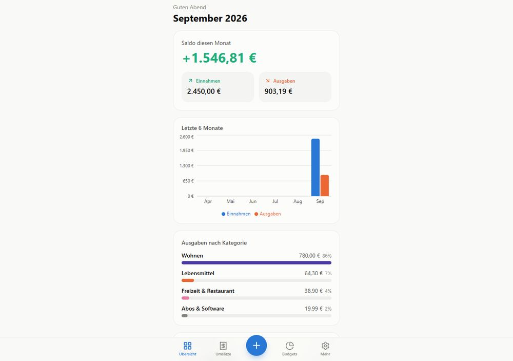

Eigenes ProjektKassensturz
Ein für mich persönlich entwickeltes Finanz-Tool — installierbar als PWA auf dem iPhone. Übersicht über Einnahmen/Ausgaben, Budgets pro Kategorie und optionaler Bank-Sync über die GoCardless-Schnittstelle. Wird laufend erweitert, unter anderem um Wochenaufgaben, Einkaufslisten und einen Health-Tracker.
- React
- TypeScript
- Vite
- Tailwind
- Dexie (IndexedDB)